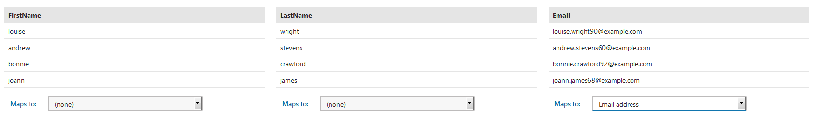
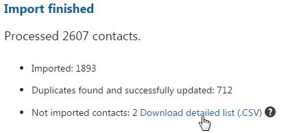

Importing contacts
You can import contacts into Kentico from Comma-separated values (CSV) files.
Contact import comes in handy when you need to use contacts from 3rd party systems in Kentico. Typically, you will be able to export contacts to CSV files directly from your CRM. You can also export CSV files from Excel spreadsheets. After importing contacts and adding them to a contact group, you can send them an email. The Kentico EMS edition also allows you to start a marketing automation process or use other On-line marketing functionality.
Limitations and requirements
Please take into account the following requirements and limitations of the import functionality:
Only CSV files can be used for import.
The input CSV file has to be encoded in UTF-8.
The first row of the input file must contain a header with the names of the columns.
Only text contact fields are supported. Importing of birthday, gender, country and other such fields is not supported.
See an example CSV File.
The contact import uses HTML 5 File API functionality, which is supported by the majority of modern browsers.
To import contacts in Kentico
Note that the import process overwrites existing values.
Open the Contact management application on the Contacts tab.
Click the Import contacts button.
Click the Select a file button.
Select the CSV from which you want to import contacts.
Segment the imported contacts into a contact group by selecting from the following:
Create a new contact group
Import contacts into an existing contact group
Do not segment imported contacts
Map the columns from your file to Kentico contact fields by specifying which contact fields represent the specific values in the file:
Each value can be represented by one field.
You always need to map the Email value. Kentico uses emails to identify unique contacts.
Labels in gray show names of the columns from the input CSV files (First Name, Last Name and Email). Values under the column names show sample values in each column. The drop-down list under each column allows you to specify which of the contact's fields will be filled with values from this column.
Click the Import contacts button.
The import process starts. Please don't leave the page until the Import finished status is shown.
Once the process is finished, you can see a confirmation screen showing the result of the import.
See how you can now work with the contacts you just imported.
After the import, the Kentico EMS system automatically:
Recalculates all the affected Personas, Contact groups, and Scores to keep them up-to-date.
Triggers Marketing automation processes that use the 'Contact created' and 'Contact changed' triggers for newly created and updated contacts.
Import finished screen description
Once the import finishes, a summary screen is displayed showing import results.

Import finished screen
Each contact from the input file can end up in one of the following categories:
Imported – the number of contacts successfully created in the system.
Duplicates found and successfully updated – the number of contacts from the input file that already existed in the Kentico database and were successfully updated. Also contains entries that were in the CSV file more than once.
Not imported contacts – the number of contacts that weren't created or updated due to an error. You can download a .CSV file containing the contacts that haven't been imported. The file contains an explanation of how you can remedy the situation next to each entry. Afterwards, you can import the file with the remaining contacts.